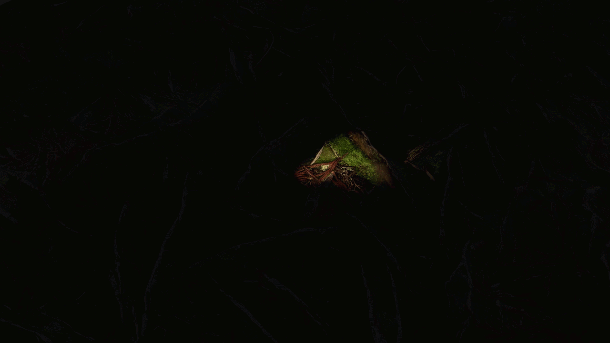

Wurzel des Lichts
In diesem visuellen Stück erprobt sich Erich an einer Bildfolge, die der Wurzel des Lichts gewidmet ist. Konkret handelt es sich um eine Aneinanderreihung von Standbildern. Jedes dieser Bilder belichtet eine der Natur entsprungene Umgebung aus einem anderen Winkel in einer virtuellen Umgebung. Es ist ein geschicktes Zusammenspiel zwischen Licht, Schatten, Leben und Leere. Es macht gleichermaßen neugierig wie traurig: Was geschieht im Dunklen? Weshalb entzieht es sich unserer Wahrnehmung? Und warum zeigt sich das Gesehene, wenn auch virtuell erzeugt? Diese Umgebung erfasst äußerst reale Lebensumstände und gibt zu denken. Wenn gedacht, dann erdacht und somit auch erbracht. Dies könnte der grundlegende Ansatz zur Beantwortung all dieser Fragen sein. Euer Erich
